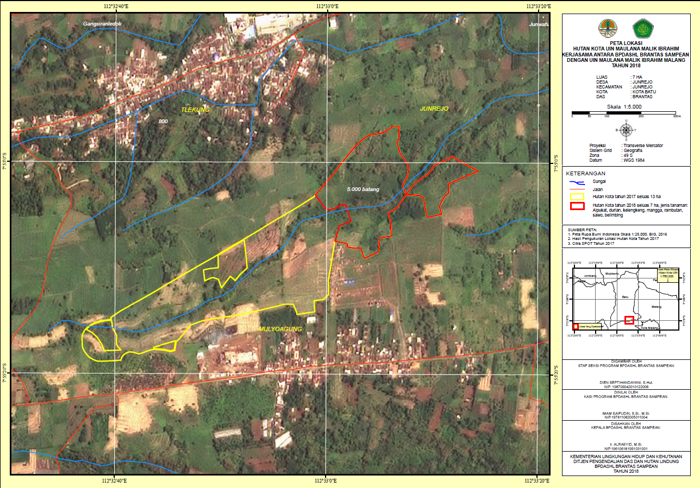

LATAR BELAKANG
Pasar Induk Among Tani adalah wajah baru perekonomian rakyat Kota Batu yang kini berkembang menjadi destinasi wisata belanja dan kuliner berbasis kearifan lokal. Melalui Program Simpul SAE, digitalisasi menjadi langkah strategis untuk menghadirkan pasar yang lebih modern, bersih, dan dekat dengan masyarakat. Dengan konten digital dan media sosial, pasar ini menampilkan kisah pedagang, produk unggulan, dan suasana autentik, menjadikannya ruang wisata baru yang menyatukan ekonomi rakyat, budaya, dan teknologi.